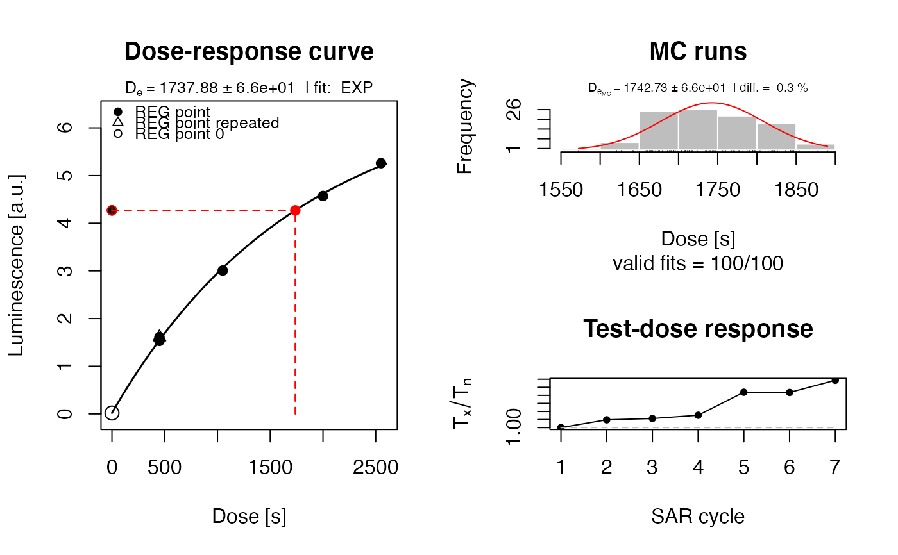
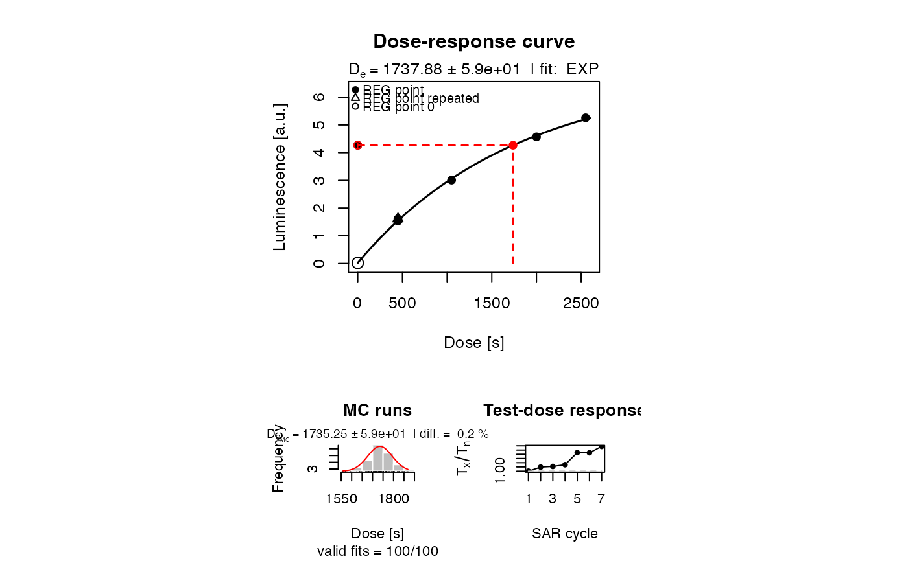
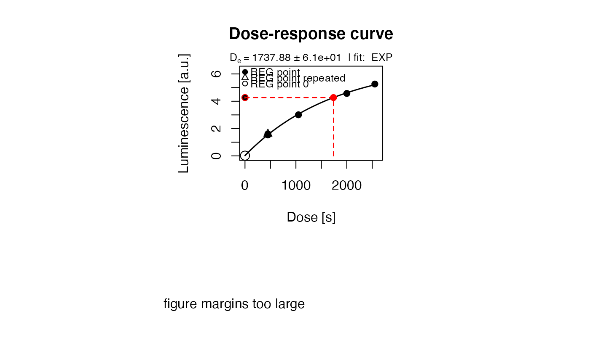
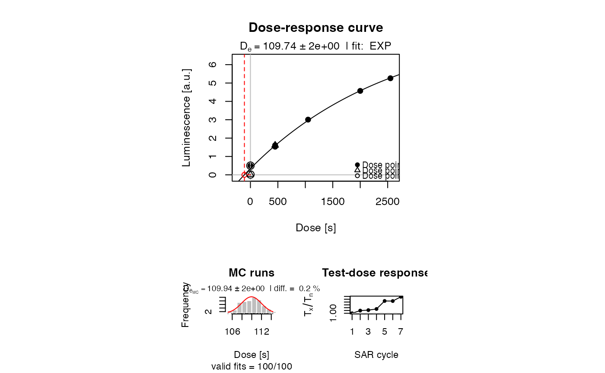
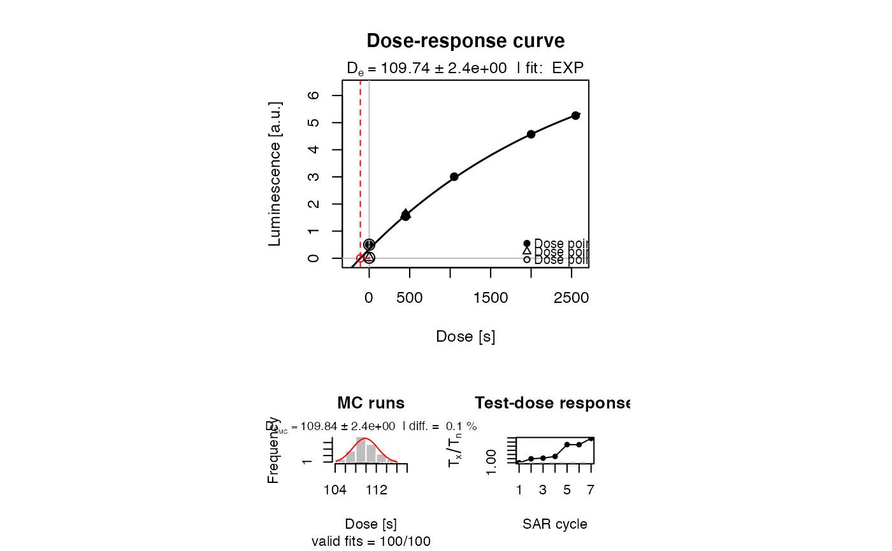

R/plot_GrowthCurve.R
plot_GrowthCurve.RdA dose-response curve is produced for luminescence measurements using a regenerative or additive protocol. The function supports interpolation and extrapolation to calculate the equivalent dose.
plot_GrowthCurve(
sample,
na.rm = TRUE,
mode = "interpolation",
fit.method = "EXP",
fit.force_through_origin = FALSE,
fit.weights = TRUE,
fit.includingRepeatedRegPoints = TRUE,
fit.NumberRegPoints = NULL,
fit.NumberRegPointsReal = NULL,
fit.bounds = TRUE,
NumberIterations.MC = 100,
output.plot = TRUE,
output.plotExtended = TRUE,
output.plotExtended.single = FALSE,
cex.global = 1,
txtProgressBar = TRUE,
verbose = TRUE,
...
)data.frame (required):
data frame with three columns for x = Dose,y = LxTx,z = LxTx.Error, y1 = TnTx.
The column for the test dose response is optional, but requires 'TnTx' as
column name if used. For exponential fits at least three dose points
(including the natural) should be provided.
logical (with default): excludes NA values from the data set prior to any further operations. This argument is defunct and will be removed in a future version!
character (with default): selects calculation mode of the function.
"interpolation" (default) calculates the De by interpolation,
"extrapolation" calculates the equivalent dose by extrapolation (useful for MAAD measurements) and
"alternate" calculates no equivalent dose and just fits the data points.
Please note that for option "regenerative" the first point is considered
as natural dose
character (with default): function used for fitting. Possible options are:
LIN,
QDR,
EXP,
EXP OR LIN,
EXP+LIN,
EXP+EXP,
GOK,
LambertW
See details.
logical (with default)
allow to force the fitted function through the origin.
For method = "EXP+EXP" the function will be fixed through
the origin in either case, so this option will have no effect.
logical (with default): option whether the fitting is done with or without weights. See details.
logical (with default):
includes repeated points for fitting (TRUE/FALSE).
integer (optional): set number of regeneration points manually. By default the number of all (!) regeneration points is used automatically.
integer (optional): if the number of regeneration points is provided manually, the value of the real, regeneration points = all points (repeated points) including reg 0, has to be inserted.
logical (with default):
set lower fit bounds for all fitting parameters to 0. Limited for the use
with the fit methods EXP, EXP+LIN, EXP OR LIN, GOK, LambertW
Argument to be inserted for experimental application only!
integer (with default): number of Monte Carlo simulations for error estimation. See details.
logical (with default):
plot output (TRUE/FALSE).
logical (with default):
If' TRUE, 3 plots on one plot area are provided:
growth curve,
histogram from Monte Carlo error simulation and
a test dose response plot.
If FALSE, just the growth curve will be plotted.
Requires: output.plot = TRUE.
logical (with default):
single plot output (TRUE/FALSE) to allow for plotting the results in
single plot windows. Requires output.plot = TRUE and
output.plotExtended = TRUE.
numeric (with default): global scaling factor.
logical (with default):
enables or disables txtProgressBar. If verbose = FALSE also no
txtProgressBar is shown.
logical (with default): enables or disables terminal feedback.
Further arguments and graphical parameters to be passed. Note:
Standard arguments will only be passed to the growth curve plot. Supported:
xlim, ylim, main, xlab, ylab
Along with a plot (so far wanted) an RLum.Results object is returned containing,
the slot data contains the following elements:
| DATA.OBJECT | TYPE | DESCRIPTION |
..$De : | data.frame | Table with De values |
..$De.MC : | numeric | Table with De values from MC runs |
..$Fit : | nls or lm | object from the fitting for EXP, EXP+LIN and EXP+EXP.
In case of a resulting linear fit when using LIN, QDR or EXP OR LIN |
..$Formula : | expression | Fitting formula as R expression |
..$call : | call | The original function call |
Fitting methods
For all options (except for the LIN, QDR and the EXP OR LIN),
the minpack.lm::nlsLM function with the LM (Levenberg-Marquardt algorithm)
algorithm is used. Note: For historical reasons for the Monte Carlo
simulations partly the function nls using the port algorithm.
The solution is found by transforming the function or using uniroot.
LIN: fits a linear function to the data using
lm: $$y = mx + n$$
QDR: fits a linear function to the data using
lm: $$y = a + bx + cx^2$$
EXP: tries to fit a function of the form
$$y = a(1 - exp(-\frac{(x+c)}{b}))$$
Parameters b and c are approximated by a linear fit using lm. Note: b = D0
EXP OR LIN: works for some cases where an EXP fit fails.
If the EXP fit fails, a LIN fit is done instead.
EXP+LIN: tries to fit an exponential plus linear function of the
form:
$$y = a(1-exp(-\frac{x+c}{b}) + (gx))$$
The \(D_e\) is calculated by iteration.
Note: In the context of luminescence dating, this function has no physical meaning. Therefore, no D0 value is returned.
EXP+EXP: tries to fit a double exponential function of the form
$$y = (a_1 (1-exp(-\frac{x}{b_1}))) + (a_2 (1 - exp(-\frac{x}{b_2})))$$
This fitting procedure is not robust against wrong start parameters and
should be further improved.
GOK: tries to fit the general-order kinetics function after
Guralnik et al. (2015) of the form of
$$y = a (d - (1 + (\frac{1}{b}) x c)^{(-1/c)})$$
where c > 0 is a kinetic order modifier
(not to be confused with c in EXP or EXP+LIN!).
LambertW: tries to fit a dose-response curve based on the Lambert W function
according to Pagonis et al. (2020). The function has the form
$$y ~ (1 + (W((R - 1) * exp(R - 1 - ((x + D_{int}) / D_{c}))) / (1 - R))) * N$$
with \(W\) the Lambert W function, calculated using the package lamW::lambertW0,
\(R\) the dimensionless retrapping ratio, \(N\) the total concentration
of trappings states in cm^-3 and \(D_{c} = N/R\) a constant. \(D_{int}\) is
the offset on the x-axis. Please not that finding the root in mode = "extrapolation"
is a non-easy task due to the shape of the function and the results might be
unexpected.
Fit weighting
If the option fit.weights = TRUE is chosen, weights are calculated using
provided signal errors (Lx/Tx error):
$$fit.weights = \frac{\frac{1}{error}}{\Sigma{\frac{1}{error}}}$$
Error estimation using Monte Carlo simulation
Error estimation is done using a parametric bootstrapping approach. A set of
Lx/Tx values is constructed by randomly drawing curve data sampled from normal
distributions. The normal distribution is defined by the input values (mean = value, sd = value.error). Then, a dose-response curve fit is attempted for each
dataset resulting in a new distribution of single De values. The standard
deviation of this distribution is becomes then the error of the De. With increasing
iterations, the error value becomes more stable. However, naturally the error
will not decrease with more MC runs.
Alternatively, the function returns highest probability density interval estimates as output, users may find more useful under certain circumstances.
Note: It may take some calculation time with increasing MC runs,
especially for the composed functions (EXP+LIN and EXP+EXP).
Each error estimation is done with the function of the chosen fitting method.
Subtitle information
To avoid plotting the subtitle information, provide an empty user mtext
mtext = "". To plot any other subtitle text, use mtext.
1.11.10
Kreutzer, S., Dietze, M., 2023. plot_GrowthCurve(): Fit and plot a dose-response curve for luminescence data (Lx/Tx against dose). Function version 1.11.10. In: Kreutzer, S., Burow, C., Dietze, M., Fuchs, M.C., Schmidt, C., Fischer, M., Friedrich, J., Mercier, N., Philippe, A., Riedesel, S., Autzen, M., Mittelstrass, D., Gray, H.J., Galharret, J., 2023. Luminescence: Comprehensive Luminescence Dating Data Analysis. R package version 0.9.23. https://CRAN.R-project.org/package=Luminescence
Berger, G.W., Huntley, D.J., 1989. Test data for exponential fits. Ancient TL 7, 43-46.
Guralnik, B., Li, B., Jain, M., Chen, R., Paris, R.B., Murray, A.S., Li, S.-H., Pagonis, P., Herman, F., 2015. Radiation-induced growth and isothermal decay of infrared-stimulated luminescence from feldspar. Radiation Measurements 81, 224-231.
Pagonis, V., Kitis, G., Chen, R., 2020. A new analytical equation for the dose response of dosimetric materials, based on the Lambert W function. Journal of Luminescence 225, 117333. doi:10.1016/j.jlumin.2020.117333
##(1) plot growth curve for a dummy data.set and show De value
data(ExampleData.LxTxData, envir = environment())
temp <- plot_GrowthCurve(LxTxData)
#> [plot_GrowthCurve()] Fit: EXP (interpolation) | De = 1737.88 | D01 = 1766.07
get_RLum(temp)
#> De De.Error D01 D01.ERROR D02 D02.ERROR Dc De.MC Fit
#> lower 1737.881 57.41192 1766.074 88.36014 NA NA NA 1740.717 EXP
#> HPDI68_L HPDI68_U HPDI95_L HPDI95_U
#> lower 1670.802 1786.901 1628.451 1867.222
##(1b) horizontal plot arrangement
layout(mat = matrix(c(1,1,2,3), ncol = 2))
plot_GrowthCurve(LxTxData, output.plotExtended.single = TRUE)
#> [plot_GrowthCurve()] Fit: EXP (interpolation) | De = 1737.88 | D01 = 1766.07

##(1c) to access the fitting value try
get_RLum(temp, data.object = "Fit")
#> Nonlinear regression model
#> model: y ~ a * (1 - exp(-(x + c)/b))
#> data: data
#> a b c
#> 6.806 1766.074 5.051
#> weighted residual sum-of-squares: 0.0004268
#>
#> Number of iterations to convergence: 4
#> Achieved convergence tolerance: 1.49e-08
##(2) plot the growth curve only - uncomment to use
##pdf(file = "~/Desktop/Growth_Curve_Dummy.pdf", paper = "special")
plot_GrowthCurve(LxTxData)
#> [plot_GrowthCurve()] Fit: EXP (interpolation) | De = 1737.88 | D01 = 1766.07

##dev.off()
##(3) plot growth curve with pdf output - uncomment to use, single output
##pdf(file = "~/Desktop/Growth_Curve_Dummy.pdf", paper = "special")
plot_GrowthCurve(LxTxData, output.plotExtended.single = TRUE)
#> [plot_GrowthCurve()] Fit: EXP (interpolation) | De = 1737.88 | D01 = 1766.07
##dev.off()
##(4) plot resulting function for given intervall x
x <- seq(1,10000, by = 100)
plot(
x = x,
y = eval(temp$Formula),
type = "l"
)

##(5) plot using the 'extrapolation' mode
LxTxData[1,2:3] <- c(0.5, 0.001)
print(plot_GrowthCurve(LxTxData,mode = "extrapolation"))
#> [plot_GrowthCurve()] Fit: EXP (extrapolation) | De = 109.74 | D01 = 2624.06

#>
#> [RLum.Results-class]
#> originator: plot_GrowthCurve()
#> data: 4
#> .. $De : data.frame
#> .. $De.MC : numeric
#> .. $Fit : nls
#> .. $Formula : expression
#> additional info elements: 1
##(6) plot using the 'alternate' mode
LxTxData[1,2:3] <- c(0.5, 0.001)
print(plot_GrowthCurve(LxTxData,mode = "alternate"))

#>
#> [RLum.Results-class]
#> originator: plot_GrowthCurve()
#> data: 4
#> .. $De : data.frame
#> .. $De.MC : logical
#> .. $Fit : nls
#> .. $Formula : expression
#> additional info elements: 1
##(7) import and fit test data set by Berger & Huntley 1989
QNL84_2_unbleached <-
read.table(system.file("extdata/QNL84_2_unbleached.txt", package = "Luminescence"))
results <- plot_GrowthCurve(
QNL84_2_unbleached,
mode = "extrapolation",
plot = FALSE,
verbose = FALSE)
#> Warning: [plot_GrowthCurve()] 'fit.weights' ignored since the error column is invalid or 0.
#calculate confidence interval for the parameters
#as alternative error estimation
confint(results$Fit, level = 0.68)
#> Waiting for profiling to be done...
#> 16% 84%
#> a 140543.3024 146731.8471
#> b 374.0861 425.5679
#> c 116.3499 133.3474
if (FALSE) {
QNL84_2_bleached <-
read.table(system.file("extdata/QNL84_2_bleached.txt", package = "Luminescence"))
STRB87_1_unbleached <-
read.table(system.file("extdata/STRB87_1_unbleached.txt", package = "Luminescence"))
STRB87_1_bleached <-
read.table(system.file("extdata/STRB87_1_bleached.txt", package = "Luminescence"))
print(
plot_GrowthCurve(
QNL84_2_bleached,
mode = "alternate",
plot = FALSE,
verbose = FALSE)$Fit)
print(
plot_GrowthCurve(
STRB87_1_unbleached,
mode = "alternate",
plot = FALSE,
verbose = FALSE)$Fit)
print(
plot_GrowthCurve(
STRB87_1_bleached,
mode = "alternate",
plot = FALSE,
verbose = FALSE)$Fit)
}